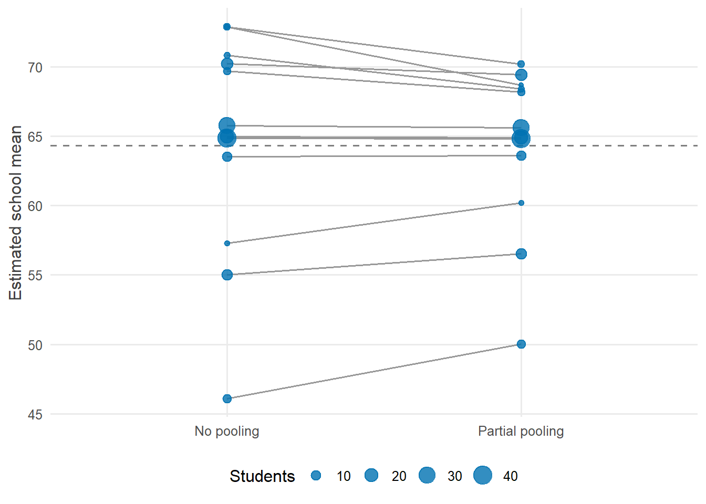
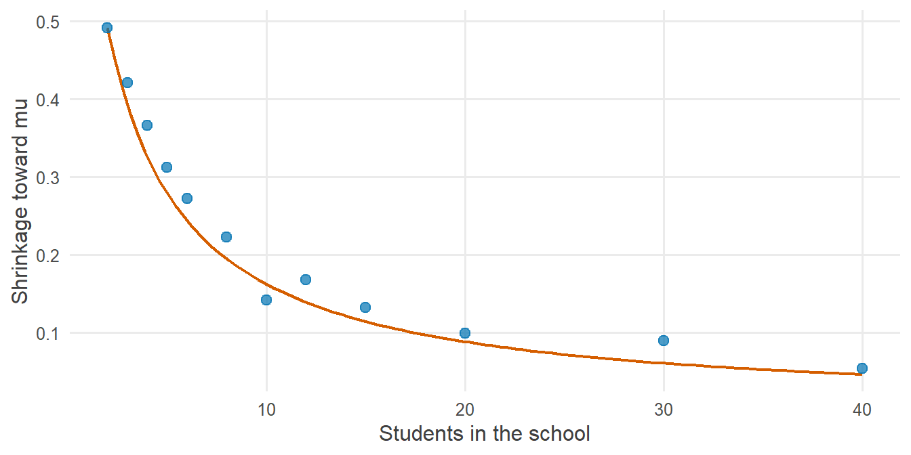

library(tidyverse)
library(cmdstanr)
library(posterior)
library(tidybayes)
source("R/theme.R")
source("R/utils.R")第 10 章 层级模型：部分池化
完全合并、完全分开、部分池化，三者差在哪里？为什么小样本的组会被“拉向”总体均值？观测索引与组索引怎样对应？
研究数据常常有分组结构：学生嵌套在学校里，试次嵌套在被试里，测量嵌套在地点里。面对分组数据，有两种朴素的做法：要么把所有组合并成一组，要么把每组分开单独分析。
层级模型提供了第三条路：部分池化。它让每个组既保留自己的特点，又向其他组“借力”。本章用 Stan 把三种做法并排实现，看它们的差别从何而来。
1 本章要回答的问题
- 完全合并、完全分开、部分池化，三者差在哪里？
- 为什么部分池化会把小样本的组“拉向”总体均值？拉多少由什么决定？
- 观测索引
i与组索引j应该怎样在 Stan 中建立映射？
2 公式卡片
三种池化方式
完全合并：所有学校共享一个均值
\[ y_i \sim \operatorname{Normal}(\mu,\ \sigma) \]
完全分开：每所学校一个均值，彼此无关
\[ y_i \sim \operatorname{Normal}(\alpha_{j[i]},\ \sigma), \qquad \alpha_j \sim \operatorname{Normal}(70,\ 50) \]
部分池化：每所学校一个均值，这些均值来自一个共同的分布，而这个分布本身也要估计
\[ \begin{aligned} y_i &\sim \operatorname{Normal}(\alpha_{j[i]},\ \sigma) \\ \alpha_j &\sim \operatorname{Normal}(\mu,\ \tau) \\ \mu &\sim \operatorname{Normal}(70,\ 20), \quad \tau \sim \operatorname{Exponential}(0.1), \quad \sigma \sim \operatorname{Exponential}(0.1) \end{aligned} \]
记号 \(j[i]\) 读作“观测 \(i\) 所属的组”。比较三个模型：完全分开时，\(\alpha_j\) 的先验是固定的、很宽的 \(\operatorname{Normal}(70, 50)\)；部分池化时，\(\alpha_j\) 的先验 \(\operatorname{Normal}(\mu, \tau)\) 中的 \(\mu\) 和 \(\tau\) 从数据中学习。层级模型的全部奥妙，就在这一点上。
3 模拟数据
研究情境：12 所学校参加同一次数学测验。各校参加测验的学生人数差别很大，从 2 人到 40 人不等。
set.seed(2026)
J <- 12
n_j <- c(2, 3, 4, 5, 6, 8, 10, 12, 15, 20, 30, 40) # students per school
mu_true <- 70 # population mean of school means
tau_true <- 10 # SD between schools
sigma_true <- 10 # SD between students within a school
alpha_true <- rnorm(J, mu_true, tau_true) # true school means
sim_data <- tibble(school = rep(1:J, times = n_j)) |>
mutate(score = rnorm(n(), alpha_true[school], sigma_true))
school_summary <- sim_data |>
group_by(school) |>
summarise(n = n(), mean_score = mean(score)) |>
mutate(alpha_true = alpha_true)
school_summary#> # A tibble: 12 × 4
#> school n mean_score alpha_true
#> <int> <int> <dbl> <dbl>
#> 1 1 2 73.0 75.2
#> 2 2 3 57.3 59.2
#> 3 3 4 70.8 71.4
#> 4 4 5 72.9 69.2
#> 5 5 6 69.7 63.3
#> 6 6 8 45.9 44.8
#> 7 7 10 63.5 62.6
#> 8 8 12 55.0 59.8
#> 9 9 15 70.2 71.1
#> 10 10 20 64.9 65.3
#> 11 11 30 65.8 65.9
#> 12 12 40 64.8 62.7数据是“长格式”：每行一名学生，school 列记录他属于哪所学校。
4 Stan 代码
4.1 观测索引与组索引
三个模型共享同一种数据结构：
data {
int<lower=0> N; // number of students
int<lower=1> J; // number of schools
array[N] int<lower=1, upper=J> school; // school of each student
vector[N] y; // math score
}这里有两套下标：
| 下标 | 范围 | 指什么 | 对应的变量 |
|---|---|---|---|
| \(i\) | \(1, \dots, N\) | 学生（观测） | y[i]、school[i] |
| \(j\) | \(1, \dots, J\) | 学校（组） | alpha[j] |
school 是一个长度为 \(N\) 的整数数组，它就是公式中的 \(j[i]\)：把每个观测映射到它所属的组。约束 <lower=1, upper=J> 保证每个编号都是合法的组号。
4.2 三个模型
完全分开：
model {
target += normal_lpdf(alpha | 70, 50);
target += exponential_lpdf(sigma | 0.1);
target += normal_lpdf(y | alpha[school], sigma);
}部分池化：
// Chapter 10: Partial pooling (hierarchical model, centered parameterization)
//
// y_i ~ Normal(alpha[school_i], sigma)
// alpha[j] ~ Normal(mu, tau) the prior itself is learned
// mu ~ Normal(70, 20)
// tau ~ Exponential(0.1)
// sigma ~ Exponential(0.1)
data {
int<lower=0> N; // number of students
int<lower=1> J; // number of schools
array[N] int<lower=1, upper=J> school; // school of each student
vector[N] y; // math score
}
parameters {
real mu; // population mean of school means
real<lower=0> tau; // SD of school means
vector[J] alpha; // school means
real<lower=0> sigma; // within-school SD
}
model {
// Hyperpriors
target += normal_lpdf(mu | 70, 20);
target += exponential_lpdf(tau | 0.1);
target += exponential_lpdf(sigma | 0.1);
// Population distribution of school means
target += normal_lpdf(alpha | mu, tau);
// Likelihood: student i belongs to school school[i]
target += normal_lpdf(y | alpha[school], sigma);
}
generated quantities {
real alpha_new = normal_rng(mu, tau); // mean of a new, unobserved school
}部分池化模型与完全分开模型的差别只有两处：parameters 中多了 mu 和 tau，alpha 的先验从固定的 normal_lpdf(alpha | 70, 50) 变成了 normal_lpdf(alpha | mu, tau)。完全合并模型见 stan/ch10_pooled.stan。
注意似然中的 alpha[school]：用一个整数数组去索引向量，得到的是一个长度为 \(N\) 的向量，第 \(i\) 个元素就是 alpha[school[i]]。这一行等价于：
for (i in 1:N) {
target += normal_lpdf(y[i] | alpha[school[i]], sigma);
}5 R 端运行
stan_data <- list(
N = nrow(sim_data),
J = J,
school = sim_data$school,
y = sim_data$score
)
fit_pooled <- cmdstan_model("stan/ch10_pooled.stan")$sample(
data = stan_data[c("N", "y")], seed = 2026, chains = 4, parallel_chains = 4, refresh = 0
)#> Running MCMC with 4 parallel chains...
#>
#> Chain 1 finished in 0.0 seconds.
#> Chain 2 finished in 0.0 seconds.
#> Chain 3 finished in 0.0 seconds.
#> Chain 4 finished in 0.0 seconds.
#>
#> All 4 chains finished successfully.
#> Mean chain execution time: 0.0 seconds.
#> Total execution time: 0.3 seconds.fit_unpooled <- cmdstan_model("stan/ch10_unpooled.stan")$sample(
data = stan_data, seed = 2026, chains = 4, parallel_chains = 4, refresh = 0
)#> Running MCMC with 4 parallel chains...
#>
#> Chain 1 finished in 0.1 seconds.
#> Chain 2 finished in 0.1 seconds.
#> Chain 3 finished in 0.1 seconds.
#> Chain 4 finished in 0.1 seconds.
#>
#> All 4 chains finished successfully.
#> Mean chain execution time: 0.1 seconds.
#> Total execution time: 0.2 seconds.fit_hier <- cmdstan_model("stan/ch10_hierarchical.stan")$sample(
data = stan_data, seed = 2026, chains = 4, parallel_chains = 4, refresh = 0
)#> Running MCMC with 4 parallel chains...#> Chain 1 finished in 0.1 seconds.
#> Chain 2 finished in 0.1 seconds.
#> Chain 3 finished in 0.1 seconds.
#> Chain 4 finished in 0.1 seconds.
#>
#> All 4 chains finished successfully.
#> Mean chain execution time: 0.1 seconds.
#> Total execution time: 0.3 seconds.fit_hier$diagnostic_summary()#> $num_divergent
#> [1] 0 0 1 0
#>
#> $num_max_treedepth
#> [1] 0 0 0 0
#>
#> $ebfmi
#> [1] 0.9543092 1.0759815 0.9690409 1.03351316 后验整理与可视化
6.1 总体参数
fit_hier$summary(c("mu", "tau", "sigma"))#> # A tibble: 3 × 10
#> variable mean median sd mad q5 q95 rhat ess_bulk ess_tail
#> <chr> <dbl> <dbl> <dbl> <dbl> <dbl> <dbl> <dbl> <dbl> <dbl>
#> 1 mu 64.3 64.2 2.51 2.38 60.2 68.5 1.00 4250. 2578.
#> 2 tau 7.33 7.00 2.24 2.02 4.30 11.4 1.00 2375. 1982.
#> 3 sigma 10.2 10.2 0.612 0.613 9.26 11.3 1.00 5174. 3139.\(\tau\) 是学校之间的标准差，\(\sigma\) 是同一学校内学生之间的标准差。两者都被找回了。
6.2 三种做法的学校均值
pooled_mu <- fit_pooled$summary("mu", "mean")$mean
school_estimates <- bind_rows(
fit_unpooled |>
spread_draws(alpha[school]) |>
summarise(estimate = mean(alpha), .groups = "drop") |>
mutate(method = "No pooling"),
fit_hier |>
spread_draws(alpha[school]) |>
summarise(estimate = mean(alpha), .groups = "drop") |>
mutate(method = "Partial pooling")
) |>
left_join(school_summary, by = "school")school_estimates |>
mutate(method = factor(method, levels = c("No pooling", "Partial pooling"))) |>
ggplot(aes(x = method, y = estimate, group = school)) +
geom_hline(yintercept = pooled_mu, linetype = "dashed", colour = "grey50") +
geom_line(colour = "grey60") +
geom_point(aes(size = n), colour = f2s_colors[["post"]], alpha = 0.8) +
scale_size_area(max_size = 6) +
labs(x = NULL, y = "Estimated school mean", size = "Students")
6.3 哪种做法估计得更准？
模拟数据的好处是知道真值。先在这一份数据上比较三种做法的估计误差（均方根误差，RMSE）：
rmse_table <- function(est) {
est |>
mutate(size_group = if_else(n <= 6, "Small (n <= 6)", "Large (n > 6)")) |>
group_by(method, size_group) |>
summarise(rmse = sqrt(mean((estimate - alpha_true)^2)), .groups = "drop") |>
pivot_wider(names_from = size_group, values_from = rmse) |>
select(method, `Small (n <= 6)`, `Large (n > 6)`)
}
bind_rows(
school_summary |> transmute(school, n, alpha_true, estimate = pooled_mu, method = "Complete pooling"),
school_estimates |> select(school, n, alpha_true, estimate, method)
) |>
rmse_table() |>
knitr::kable(digits = 2)| method | Small (n <= 6) | Large (n > 6) |
|---|---|---|
| Complete pooling | 6.62 | 8.06 |
| No pooling | 3.57 | 2.10 |
| Partial pooling | 3.92 | 2.56 |
完全合并忽略了学校之间真实存在的差异，误差最大。有意思的是，在这一份数据上，部分池化的误差反而比完全分开略大：这几所小学校的样本均值恰好离各自的真值很近，向总体均值收缩反而“拉远”了。在一份只有 12 所学校的数据上，这种比较受偶然性的影响很大，第 9 章已经说明过这一点。要看清两者的系统差别，需要重复模拟：
mod_unpooled <- cmdstan_model("stan/ch10_unpooled.stan")
mod_hier <- cmdstan_model("stan/ch10_hierarchical.stan")
one_replicate <- function(k) {
set.seed(3000 + k)
alpha_k <- rnorm(J, mu_true, tau_true)
d <- tibble(school = rep(1:J, times = n_j)) |>
mutate(score = rnorm(n(), alpha_k[school], sigma_true))
dl <- list(N = nrow(d), J = J, school = d$school, y = d$score)
posterior_means <- function(mod) {
mod$sample(data = dl, seed = k, chains = 2, iter_warmup = 500, iter_sampling = 500,
refresh = 0, show_messages = FALSE, show_exceptions = FALSE)$
draws("alpha", format = "matrix") |>
colMeans()
}
tibble(school = 1:J, n = n_j, alpha_true = alpha_k) |>
mutate(
`No pooling` = posterior_means(mod_unpooled),
`Partial pooling` = posterior_means(mod_hier)
) |>
pivot_longer(c(`No pooling`, `Partial pooling`), names_to = "method", values_to = "estimate")
}
repeated <- map(1:100, one_replicate) |> list_rbind()repeated |>
rmse_table() |>
knitr::kable(digits = 2)| method | Small (n <= 6) | Large (n > 6) |
|---|---|---|
| No pooling | 5.37 | 2.81 |
| Partial pooling | 4.96 | 2.67 |
平均而言，部分池化的误差小于完全分开，而且改进主要集中在小学校：它们自己的数据最少，从其他学校“借来”的信息最有价值。大学校的数据已经足够多，两种做法相差无几。部分池化并不保证在每一份数据、每一所学校上都更好，但它在平均意义上更准确，这正是“借力”的含义。
7 为什么这样写
7.1 三种做法是同一个模型的三个极端
把部分池化模型中的 \(\tau\) 推向两个极端：
- \(\tau \to 0\)：所有 \(\alpha_j\) 被压到同一个值 \(\mu\)，模型退化为完全合并；
- \(\tau \to \infty\)：\(\alpha_j\) 的先验变得无限宽，各组之间不再相互约束，模型退化为完全分开。
完全合并和完全分开，都是对 \(\tau\) 做了一个事先固定的、极端的假设。部分池化则把 \(\tau\) 当作未知参数，让数据来决定各组之间到底有多相似。
7.2 为什么小学校被拉得更多？
在 \(\mu\)、\(\tau\)、\(\sigma\) 已知的情况下，学校 \(j\) 均值的后验期望是两个量的加权平均：
\[ \mathbb{E}[\alpha_j \mid y] \approx \frac{\dfrac{n_j}{\sigma^2}\, \bar{y}_j + \dfrac{1}{\tau^2}\, \mu}{\dfrac{n_j}{\sigma^2} + \dfrac{1}{\tau^2}} = (1 - B_j)\, \bar{y}_j + B_j\, \mu, \qquad B_j = \frac{\sigma^2 / n_j}{\sigma^2 / n_j + \tau^2} \]
权重就是各自的精度（方差的倒数）：
- 学校自己的样本均值 \(\bar{y}_j\)，精度是 \(n_j / \sigma^2\)，学生越多越精确；
- 总体均值 \(\mu\)，作为“先验”的精度是 \(1/\tau^2\)。
\(B_j\) 叫作收缩因子。学生越少，\(\sigma^2/n_j\) 越大，\(B_j\) 越接近 1，估计越靠近总体均值。用后验均值把这个公式算一遍，与实际的收缩比较：
post_means <- fit_hier$summary(c("mu", "tau", "sigma"), "mean") |>
deframe()
shrink_data <- school_estimates |>
filter(method == "Partial pooling") |>
mutate(observed_shrinkage = (mean_score - estimate) / (mean_score - post_means[["mu"]]))
ggplot(shrink_data, aes(x = n, y = observed_shrinkage)) +
stat_function(
fun = \(n) (post_means[["sigma"]]^2 / n) /
(post_means[["sigma"]]^2 / n + post_means[["tau"]]^2),
colour = f2s_colors[["truth"]], linewidth = 0.8
) +
geom_point(colour = f2s_colors[["post"]], size = 2.5) +
labs(x = "Students in the school", y = "Shrinkage toward mu")
点与曲线并不完全重合，因为公式把 \(\mu\)、\(\tau\)、\(\sigma\) 当作已知，而模型中它们本身也有不确定性；但趋势完全一致。（某所学校的样本均值恰好接近 \(\mu\) 时，这个比例的分母很小，计算出的数值会不稳定。）
这个公式揭示了部分池化的本质：它不是一种调参技巧，而是“各组相似但不相同”这一假设在概率上的自然结果。
7.3 为什么用索引映射，而不是宽格式？
另一种组织数据的方式是“宽格式”：每所学校一列。但各校人数不同，宽格式需要填充缺失值，Stan 处理起来很麻烦。长格式加索引映射有三个好处：
- 每组人数可以不同，甚至可以有只有一个观测的组；
- 数据结构与 tidyverse 的整洁数据一致，R 端准备数据很自然；
- 推广到多层（学生 → 班级 → 学校）或交叉结构（被试 × 条目）时，只需要增加更多的索引数组。
关键是严格区分两套下标：与观测一一对应的量用 \(i\) 索引（长度 \(N\)），与组一一对应的量用 \(j\) 索引（长度 \(J\)），二者之间只通过 school[i] 这样的映射数组连接。
7.4 为什么新学校的预测放在 generated quantities？
alpha_new = normal_rng(mu, tau) 回答的问题是：一所没有参加测验的新学校，均值可能是多少？它不参与推断，只是用 \(\mu\)、\(\tau\) 的后验做预测，所以放在 generated quantities。这个量只有在层级模型中才有意义：完全分开模型对新学校一无所知，完全合并模型则认为新学校与总体完全相同。
8 常见错误
| 错误写法 | 后果 | 正确写法 |
|---|---|---|
| 组编号从 0 开始 | 运行时报错：违反 <lower=1> |
R 端用 as.integer(factor(...)) 生成 1 到 \(J\) 的编号 |
| 组编号不连续（如 1, 2, 5, 7） | 多出没有数据的组，或越界 | 重新编号为连续整数 |
混淆下标：alpha[i] |
用观测下标索引组参数，越界或含义错误 | alpha[school[i]] 或 alpha[school] |
real tau; 漏写约束 |
标准差可能取负值 | real<lower=0> tau; |
| 认为部分池化“把数据改了” | 误解：观测数据没有变，变的是对各组均值的估计 | 理解为“借用其他组的信息” |
| 组数很少（如 3 组）时随意设置 \(\tau\) 的先验 | \(\tau\) 的后验强烈依赖先验 | 认真选择 \(\tau\) 的先验，并做敏感性分析 |
9 练习
练习 1 预测一所新学校
用 alpha_new 的后验，给出一所新学校平均分的 90% 预测区间。它为什么比 \(\mu\) 的区间宽得多？
提示参考答案
fit_hier$summary(c("mu", "alpha_new"), "mean", ~ quantile(.x, c(0.05, 0.95)))#> # A tibble: 2 × 4
#> variable mean `5%` `95%`
#> <chr> <dbl> <dbl> <dbl>
#> 1 mu 64.3 60.2 68.5
#> 2 alpha_new 64.1 51.0 77.3\(\mu\) 的区间只反映“总体均值估计得有多准”；alpha_new 的区间还要加上“学校之间本来就有差异”这一层不确定性，其宽度主要由 \(\tau\) 决定。前者回答“学校的平均水平是多少”，后者回答“下一所学校会是多少”。
练习 2 把 \(\tau\) 固定下来
修改部分池化模型，把 \(\tau\) 作为数据传入并固定为 0.1 和 1000，分别拟合。结果分别接近哪种做法？
提示参考答案
在 data 块中加入 real<lower=0> tau;，并从 parameters 块和先验中删去 tau。
- \(\tau = 0.1\)：各校均值几乎被压到同一个值，结果接近完全合并；
- \(\tau = 1000\)：先验对各校均值几乎没有约束，结果接近完全分开。
这验证了“三种做法是同一个模型的三个极端”。部分池化把 \(\tau\) 交给数据决定，本章的估计值约为 7.3，介于两个极端之间。
练习 3 加入学生层面的预测变量
假设每名学生还有每周学习时长 hours。写出“学校截距不同、学习时长斜率相同”的模型。
提示参考答案
公式：
\[ y_i \sim \operatorname{Normal}(\alpha_{j[i]} + \beta\, x_i,\ \sigma), \qquad \alpha_j \sim \operatorname{Normal}(\mu, \tau) \]
Stan 程序中，data 块加 vector[N] x;，parameters 块加 real beta;，似然改为：
target += normal_lpdf(y | alpha[school] + beta * x, sigma);再给 beta 加一行先验即可。如果希望斜率也因学校而异，就让 beta 也变成长度为 \(J\) 的向量并有自己的层级分布；此时截距与斜率之间的相关性通常也需要建模，会用到第 3 章提到的 cholesky_factor_corr 类型。
练习 4 组越多，\(\tau\) 估计越准
保持每校人数分布不变，把学校数从 12 增加到 48（每种人数各 4 所学校），\(\tau\) 的后验会怎样变化？
提示参考答案
set.seed(2027)
J_big <- 48
n_big <- rep(n_j, times = 4)
alpha_big <- rnorm(J_big, mu_true, tau_true)
big_data <- tibble(school = rep(1:J_big, times = n_big)) |>
mutate(score = rnorm(n(), alpha_big[school], sigma_true))
fit_big <- cmdstan_model("stan/ch10_hierarchical.stan")$sample(
data = list(N = nrow(big_data), J = J_big, school = big_data$school, y = big_data$score),
seed = 2026, chains = 4, parallel_chains = 4, refresh = 0
)#> Running MCMC with 4 parallel chains...#> Chain 1 finished in 0.3 seconds.
#> Chain 2 finished in 0.3 seconds.
#> Chain 3 finished in 0.3 seconds.
#> Chain 4 finished in 0.3 seconds.
#>
#> All 4 chains finished successfully.
#> Mean chain execution time: 0.3 seconds.
#> Total execution time: 0.5 seconds.bind_rows(
fit_hier$summary("tau", "mean", "sd", ~ quantile(.x, c(0.05, 0.95))) |> mutate(J = 12),
fit_big$summary("tau", "mean", "sd", ~ quantile(.x, c(0.05, 0.95))) |> mutate(J = 48)
)#> # A tibble: 2 × 6
#> variable mean sd `5%` `95%` J
#> <chr> <dbl> <dbl> <dbl> <dbl> <dbl>
#> 1 tau 7.33 2.24 4.30 11.4 12
#> 2 tau 10.5 1.21 8.71 12.5 48\(\tau\) 描述的是学校之间的差异，提供信息的是学校的个数，而不是学生的总数。学校从 12 所增加到 48 所，\(\tau\) 的后验明显变窄。这也提醒我们：组数很少时，组间标准差很难估计准确，先验的作用就更大。
10 小结
- 完全合并假设 \(\tau = 0\)，完全分开假设 \(\tau = \infty\)，部分池化让数据决定 \(\tau\)。
- 部分池化的估计是“组内均值”与“总体均值”的精度加权平均：组越小，越向总体均值收缩。
- 数据用长格式，严格区分观测下标 \(i\) 与组下标 \(j\)，用映射数组
school[i]连接两者；Stan 中alpha[school]一行完成所有观测的索引。 - 层级模型能对“新的组”做预测，这是另外两种做法做不到的。
11 延伸
- 下一章：第 11 章 漏斗与发散。当组内数据很少、组间差异很小时，本章的写法会让采样器陷入困境。
- 层级模型是 Stan 模型库中许多真实案例的基础，那里有更复杂的多层与交叉结构。
12 参考资料
- Bayesian Data Analysis 第 5 章是层级模型的经典讲解，包括收缩的推导与“八所学校”的例子 (Gelman 等, 2013)。
- Statistical Rethinking 第 13 章用“有记忆的模型”讲解部分池化，并以模拟比较了三种做法的估计误差 (McElreath, 2020)。
- Stan User’s Guide 的 Regression Models 一章中关于层级回归（hierarchical regression）的部分 (Stan Development Team, 2026)。
- 层级模型中组间标准差的先验选择见 Gelman (2006)。
Gelman, A. (2006). Prior Distributions for Variance Parameters in Hierarchical Models. Bayesian Analysis, 1(3), 515～534. https://doi.org/10.1214/06-BA117A
Gelman, A., Carlin, J. B., Stern, H. S., Dunson, D. B., Vehtari, A., & Rubin, D. B. (2013). Bayesian Data Analysis (3 版). CRC Press.
McElreath, R. (2020). Statistical Rethinking: A Bayesian Course with Examples in R and Stan (2 版). CRC Press.
Stan Development Team. (2026). Stan User’s Guide (Version 2.40). https://mc-stan.org/docs/stan-users-guide/